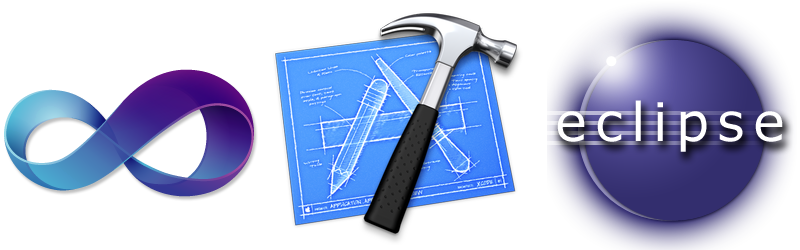
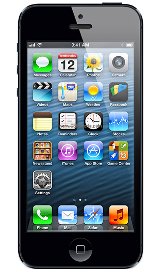
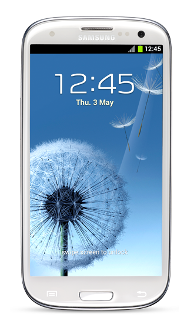
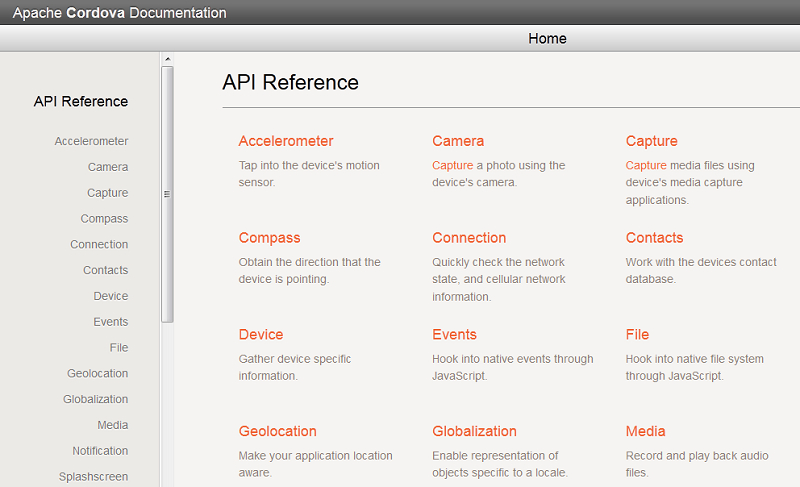

Aplicações Hibridas usando
Phonegap
Aplicação nativa
X
Aplicação hibrida
O que é uma aplicação nativa?
iOS
- Linguagem: Objective-C
- Ferramenta: X-Code
- Sistema Operacional: MacOS
Android
- Linguagem: Java
- Ferramenta: Eclipse
- Sistema Operacional:
Linux, MacOS, Windows
Windows Phone
- Linguagem: C#
- Ferramenta: Visual Studio
- Sistema Operacional: Windows
O que é uma aplicação hibrida?
Vantagens
- Portabilidade
- Produtividade
- Baixo custo
Desvantagens
- Interface
- Performance
O que é o Phonegap?

Gosta do jQuery? Conheça o Zepto!
If you use jQuery, you already know how to use Zepto.
Phonegap API
- Acelerômetro
- Geolocalização
- Vídeo
- Áudio
- Eventos
- Bússola
- Contatos
- Câmera
- Arquivos
- Conexão
- Armazenamento
- Dispositivo
- Globalização
- Notificação
Geolocalização API
var onSuccess = function(position) {
alert('Latitude: ' + position.coords.latitude +
'Longitude: ' + position.coords.longitude +
'Altitude: ' + position.coords.altitude +
'Precisão: ' + position.coords.accuracy +
'Precisão da altitude: ' + position.coords.altitudeAccuracy +
'Direção: ' + position.coords.heading +
'Velocidade: ' + position.coords.speed +
'Timestamp: ' + position.timestamp);
};
navigator.geolocation.getCurrentPosition(onSuccess, [onError],
[geolocationOptions]);Câmera API
function onSuccess(imageURI) {
var imagem = document.getElementById('minhaImagem');
imagem.src = imageURI;
}
function onFail(message) {
alert('Motivo do erro: ' + message);
}
navigator.camera.getPicture(onSuccess, onFail, { quality: 70,
destinationType: Camera.DestinationType.FILE_URI });
Acelerômetro API
function onSuccess(acceleration) {
alert('Acceleration X: ' + acceleration.x +
'Acceleration Y: ' + acceleration.y +
'Acceleration Z: ' + acceleration.z +
'Timestamp: ' + acceleration.timestamp);
};
function onError() {
alert('fail!');
};
navigator.accelerometer.getCurrentAcceleration(onSuccess, onError);
Mais informações
http://docs.phonegap.com Obrigado :)
- github.com/guilhermefarias
- guilhermefarias.com.br
- twitter.com/guiky